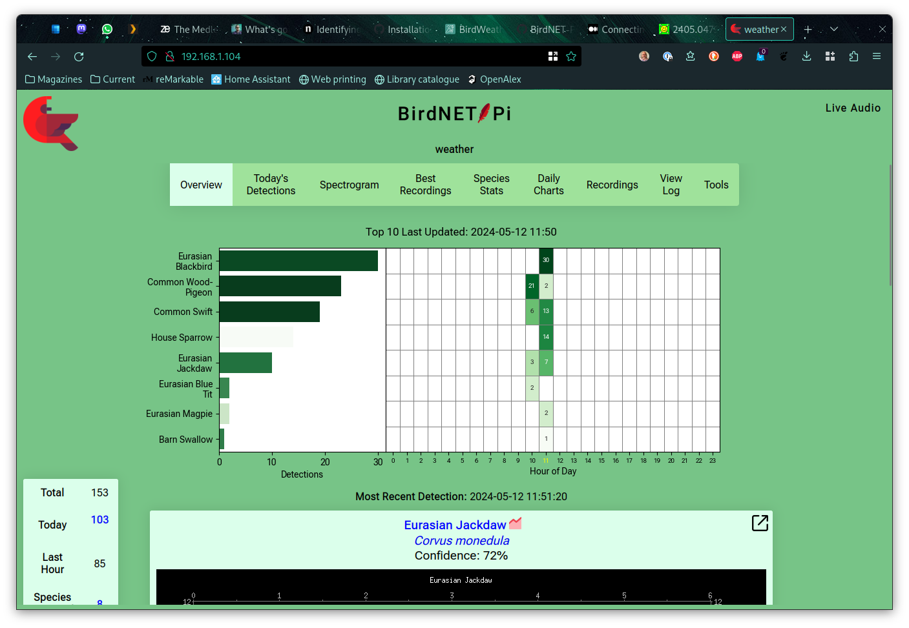

First installation of BirdNET-Pi
The BirdNET-Pi system aims to provide out-of-the-box bird identification. It’s slightly more awkward than that, but still pretty straightforward to get up and running.
My first hardware plan was to use a Raspberry Pi Zero as the compute host with a Waveshare WM8960 HAT for the sound capture. It turns out that BirdNET needs a 64-bit platform – why I’m not sure – and the Pi Zero only runs 32-bit Linux. I therefore moved to a Raspberry Pi B that I had lying around, and put a 64-bit “lite” install on it to run headless.
I then basically just followed the installation guide. There was an issue with the installation script when cloning the GitHub repo: I suspect this was because of limited memory on the Pi. I downloaded manually, and manually ran the rest of the install script, which did a lot of setup of services and a PHP web server.
I compiled the drivers for the HAT, which worked fine. The new sound card is recognised but is not the system default.
The installed components seem to include:
-
icecast2, a streaming server, used to replay recordings -
caddyweb server - PHP for serving the web pages
-
arecordto actually record audio -
ffmpegto extract waveforms sqlite for the database- the actual machine learning model used for recognition
The recognition models are built with TensorFlow. This is a great example of how the standard Linux tools and services can be combined to get a scientific-grade sensor platform. (Caddy doesn’t seem to be running over TLS by default, which would be an issue outside a firewall.)
Since the sound card isn’t the default, the easiest way to get the
system listening to the right mics is to change the device in the
“advanced settings” panel: in my case I changed from “default” to
“hw:2,0”, reflecting the output of arecord -l that shows the sound
card devices.
I then deployed the Pi out of the kitchen window.

To start with it wasn’t hearing anything, which I think may be because of the waterfall in the courtyard: turning this off made things much more effective:

That’s an appropriate set of birds being seen – and we hardly ever see magpies, but know they’re around. There’s actually quite a lot of background noise even in such a quiet village, but the bird calls do stand out.
I can’t see any reason for the manual installation on bare metal: as far as I can see everything could be containerised, which would make deployment and management a lot easier.